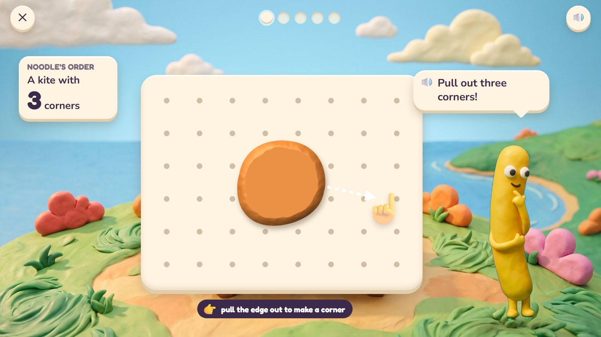
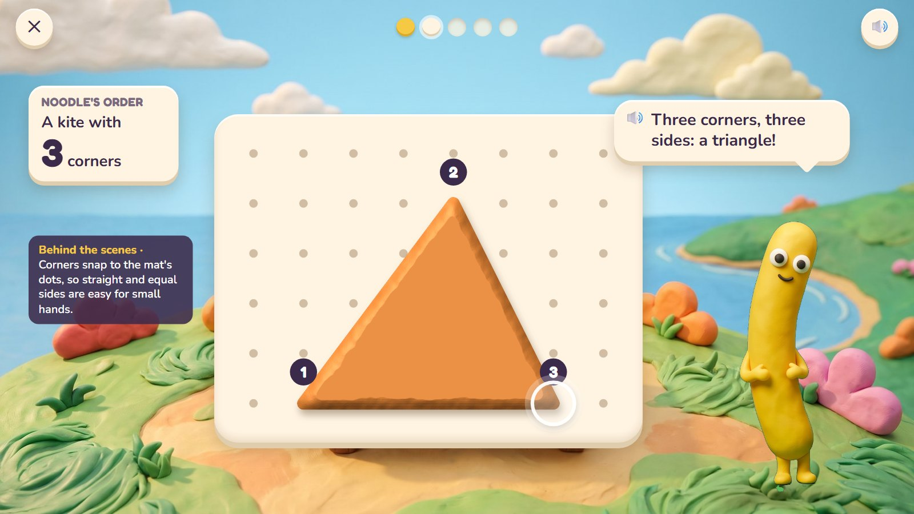
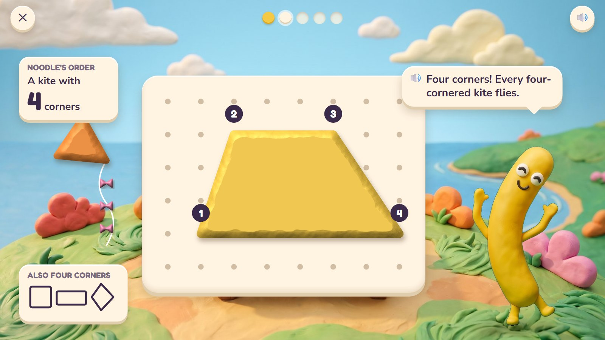
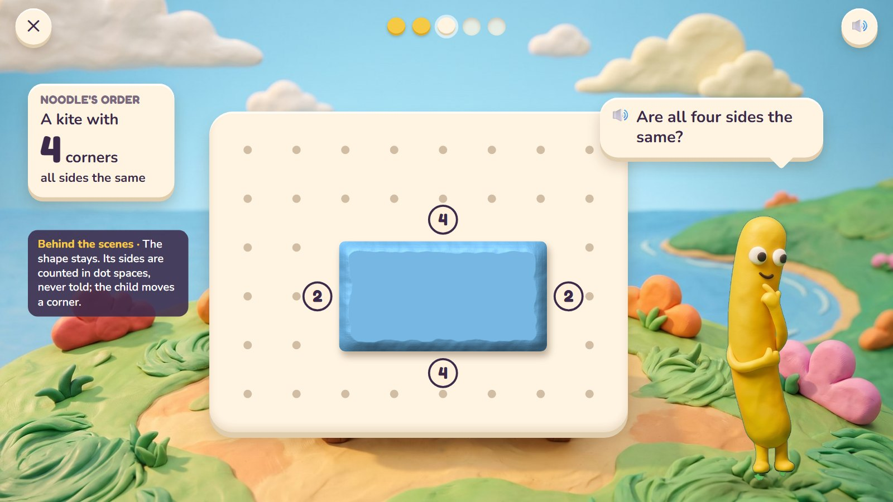
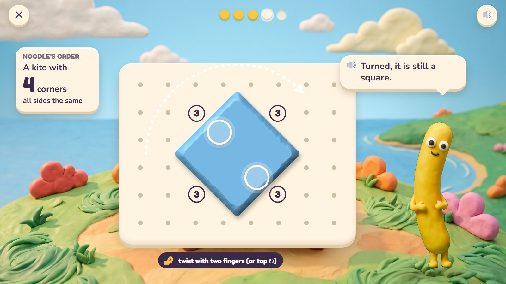

Pull-a-Shape
Noodle is making kites for the kite festival. Every kite starts as a round lump of clay on a dotted mat. Pulling the edge out makes a corner, and the clay goes straight between corners: three pulls make a triangle, four make a four-sided shape. Rubbing a corner smooths it away again. The child makes the shape first and hears its name after, so shapes are learned by their corners and sides, not by how they usually look.
Pre-K–K · ages 4–6 host: Noodle move: pull out a corner, rub it smooth, twist
The maths: Know flat shapes by their corners and sides, whatever their size or way round: triangle, square, rectangle, pentagon, hexagon, circle. One activity is five rounds, about two minutes. With one finger: drag; tap a corner to tuck it in; the ↻ button.
🎉 The fun
The clay stretches as you pull and snaps straight between corners; every kite you make really flies.
🎥 The view
Fixed on the mat; the finale looks up into the sky.
🎆 The finale
All five kites fly over the bay on tails of little bows (3 seconds); a tap makes one loop.
Six moments

1A lump of clay
Noodle's order: a kite with three corners. A round lump of orange clay lies on the dotted mat; a see-through hand pulls its edge out once.
🔊 Pull out three corners!
Corners snap to the dots, so straight and equal sides are easy for small hands.

2Pull, pull, pull
Three pulls make three corners; the clay goes straight between them. Each new corner is counted aloud.
🔊 Three corners, three sides: a triangle!
The name comes after the shape is made.

3Four corners, any way
The child pulled a wide four-cornered shape. It counts: every four-cornered kite flies. The triangle kite is already in the sky.
🔊 Four corners! Every four-cornered kite flies.
Many right answers. The card shows other four-cornered shapes children make: a square, a long rectangle, a diamond.

4A wrong try
A square kite: all four sides the same. The child made a long one. Each side shows its length in dots: 4, 2, 4, 2.
🔊 Are all four sides the same?
The shape stays. Its sides are measured, never fixed for the child; the child moves a corner.

5Still a square
Fixed: 3, 3, 3, 3. Then the child twists the square with two fingers. Standing on its corner, it is still a square.
🔊 Turned, it is still a square.
Turning never changes a shape, a common mix-up ("that is a diamond"). The ↻ button turns it for one finger.

6The kite festival
Five kites fly over the bay: a triangle, a four-cornered kite, a square, a pentagon and a hexagon.
🔊 The kite festival!
Mock-ups: Gemini's clay pictures (scenes, friends, props) with the maths drawn by code in the same clay look, the way the app would draw it, so every count and size is exact.
What is asked, for one age
- A kite with 3 corners (any triangle)
- A kite with 4 corners (any four-cornered shape)
- A square kite: 4 sides the same
- A kite with 5 corners (a pentagon)
- Is this still a triangle? Noodle turns and stretches one; yes or no
One activity card. The same activity serves other ages with other numbers:
| Age | What changes |
|---|---|
| 4 | Triangles, squares and circles (rub every corner away to make a circle). Counting corners to 4. |
| 5 | Any four-cornered shape; squares and rectangles; 5 and 6 corners. |
| 6 | Equal sides and square corners; turned and stretched shapes; sorting the kites by corners. |
Wrong answers we expect, and what happens
| Mistake | Looks like | What happens (never red, never "wrong") |
|---|---|---|
| Counting a corner twice | says 5 corners for a square | corners light up one by one as Noodle counts each once |
| A square for a rectangle | 4 corners, sides not equal | side lengths in dots appear: "Are all four the same?" |
| A turned square is "a diamond" | will not accept the turned square | Noodle turns it back: "Same sides, same corners." |
| Sides and corners mixed up | counts sides as corners | each corner gets a dot and each side a stripe, counted separately |
What it needs
- The hilltop scene, drawn once
- The dotted mat, the clay shapes and the kites, drawn by code (exact)
- Noodle in three poses
- Voice: shape names, corner and side counts, four tips
Test robot: Reads the corner count and the rule, pulls exactly that many corners to dots that obey the rule (equal sides for a square) and presses Fly. Once it pulls one corner too many.
One question
← Back to Clay Bay · Poke Pals · Pull-a-Shape · Critter Maker · Seesaw Twins · Parade Squares · Fair Slices · Zoom Dig